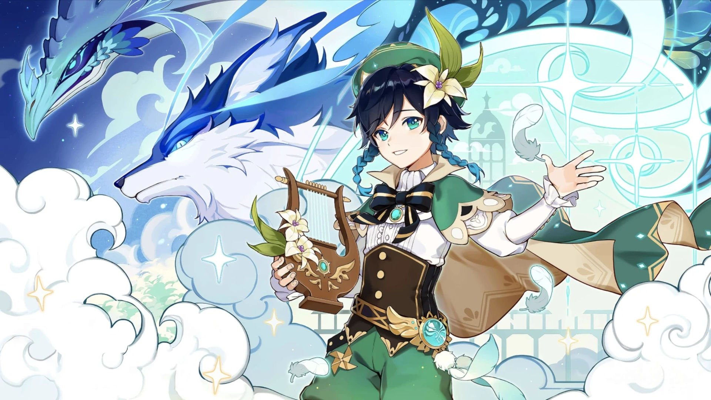

Venti, also known as the Windborne Bard and the Anemo Archon, is the free-spirited god ruling over Mondstadt. Disguised as a bard, Venti values freedom and music above all.
Though he appears laid-back and playful, Venti is a powerful deity who once fought bravely in the Archon War. He governs the winds, allowing him to travel freely and protect the people of Mondstadt from tyranny.
In Genshin Impact’s lore, Venti’s presence is poetic and mysterious. He observes the world with curiosity and aids travelers when least expected — often through song or gentle breezes.
Trivia: Venti's true form is Barbatos, one of the Seven. Despite his immortality, he chooses to live as a humble bard, drinking wine and telling tales of old Mondstadt legends.
 ⬅️ Back to Main Page